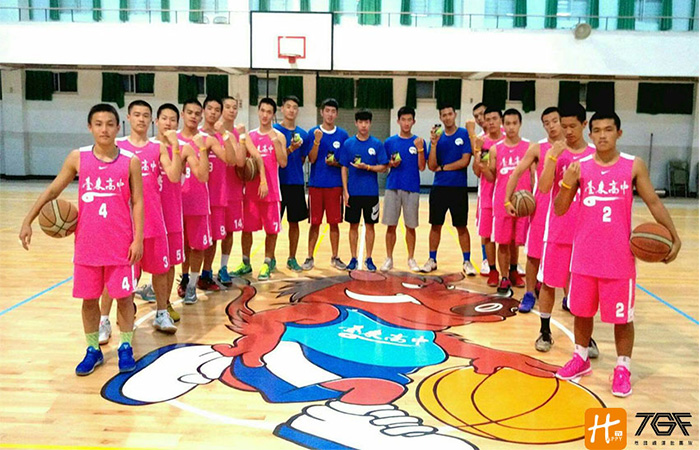

貼文時間：2017/07/07

103學年度來自後山的台東高中不負眾望，一路過關斬將，並拿下冠軍金盃。 下一學年度主力相繼畢業，戰力上出現落差，仍在104學年度拿下全國第八。對於今學年度止步於北區複賽，邱教練提到：「人才招募上是台東高中最大的難題，但我們並不氣餒。」面對困境選擇不閃躲，反倒用樂觀的天性，認真努力拚每一球，誓言將球隊應有的榮耀爭取回來，就這是台東山豬勇敢的精神…
一提到邱教練每個小球員都板著一張臉不敢放肆，並一致認為說道：「邱教練應該是全乙級最兇的教練吧。」而在如此嚴謹的訓練下，球員們一刻不敢鬆懈，深怕一個不留神就跟不上球隊練習了。
台東高中練習前的熱身內容是必須在6分40秒內完成球場20圈，這項訓練使每個人苦不堪言，他們坦言：「跑完真的很開心，感覺我都撐過了就沒什麼好怕了。」但其實他們還更怕學校附近鯉魚山斜坡衝刺。而這座鯉魚山在當地可是有個小故事，有一隻鯉魚碰巧遇到貓咪，兩隻追得你死我活，最後累倒一隻化成貓山，一隻則是化成鯉魚山。球員們聽聞這個傳說後表示：「我一定會比貓咪跑得更快抓到魚，就像我們下次一定會抓住對手，把它撕碎。」
提到招生這部分時，邱教練不禁感嘆了起來，他說：「台東地區最大的難題就是留住人才，因為關起門練，球員們只看到外頭的光鮮亮麗，卻不知道外面的世界與自己的層度差異，導致人才外流...」
籃球這項運動十分殘酷，因為速度是可以後天培養，但身高不行，這就是邱教練近幾年著重的點，教練希望每個球員都可以先承認自己與外界差異，想清楚自己的優劣勢，針對優勢去發揮，讓劣勢轉化成優勢。
現在的每一場比賽，都是準備明年度聯賽寶貴的經驗，勝負對教練團來說並不是最重要的，這些都是過程，邱教練表示：「友誼賽是一個很好成長的機會，趁聯賽前提升板凳的實力，並讓主力球員學會互相拉拔，這才是我要的。」
失敗會過去，生活會繼續，一日復一日，成功伴隨而來。目標設定，累積能量，台東高中在106學年度秉持重新出發的精神，目標再闖全國，笑擁金盃。